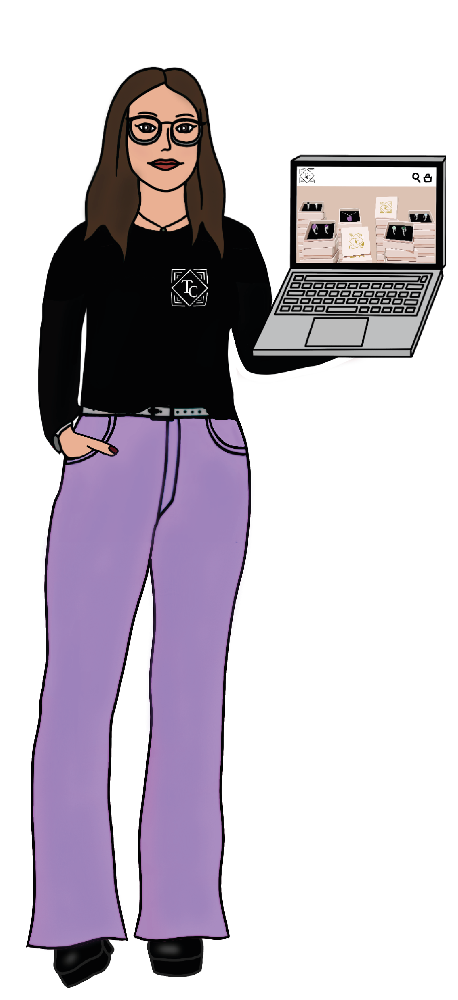
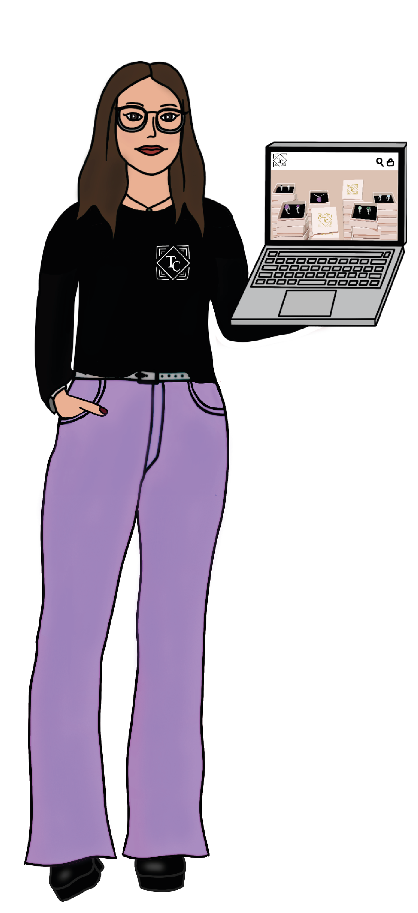
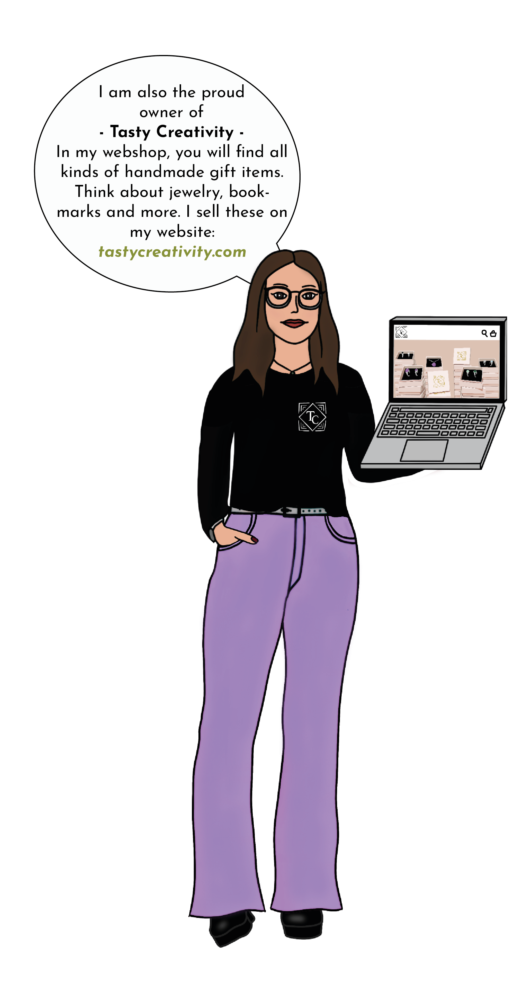
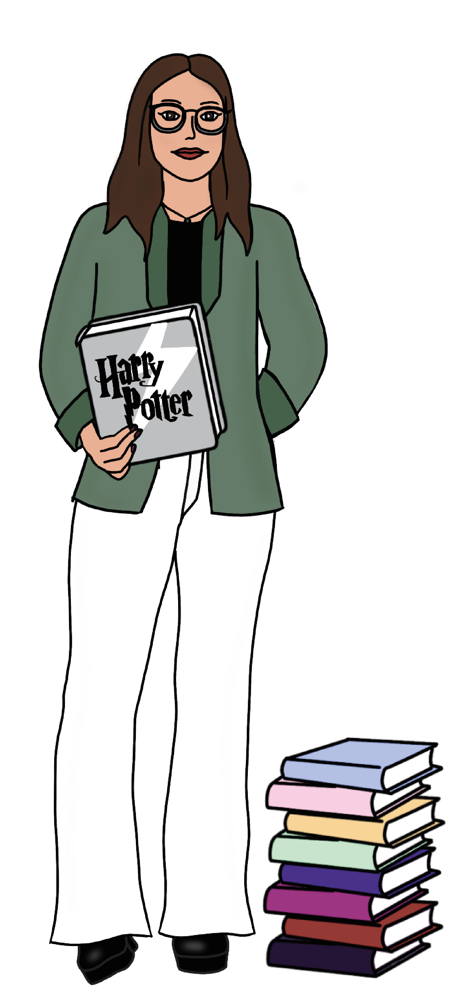
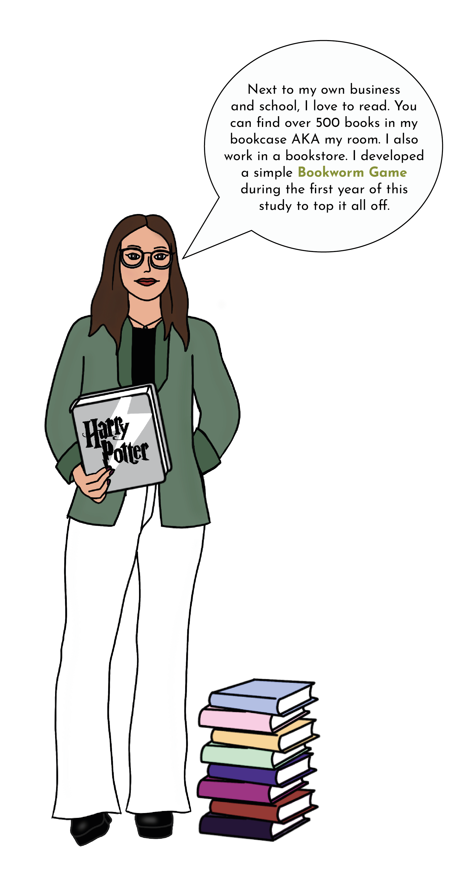
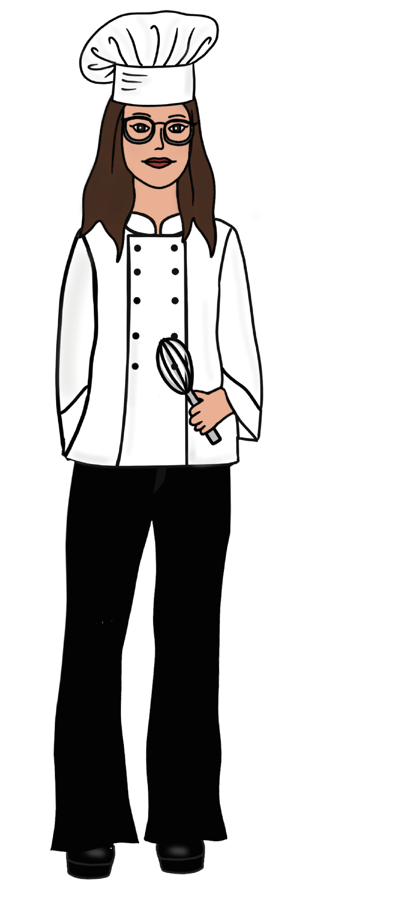
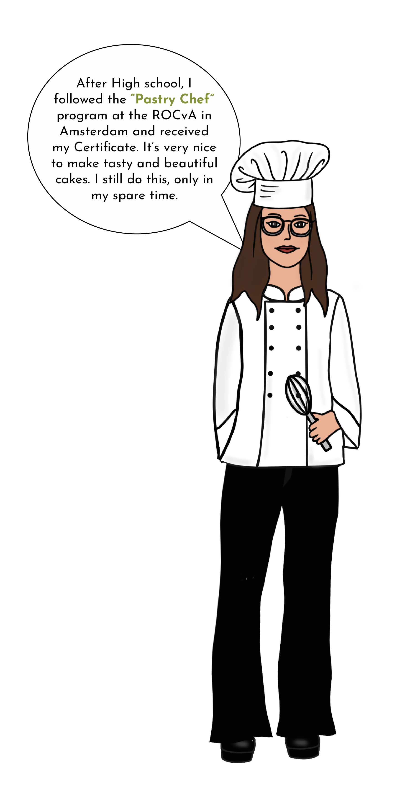

Hi! My name is Sabrina. I am a student at the Amsterdam University of Applied Sciences. I Follow the program Communication and Multimedia Design. Welcome to my portfolio.


I chose this course because I like the combination of technology and creativity. If I have to choose, I prefer the visual and UX/UI side just a bit more than the tech side.
See projects
 

I am also the proud owner of Tasty Creativity. In my webshop, you will find all kinds of handmade gift items. Think about jewelry, bookmarks and more. I sell these on my website: tastycreativity.com


Next to my own business and school, I love to read. You can find over 500 books in my bookcase AKA my room. I also work in a bookstore. I developed a simple Bookworm Game during the first year of this study to top it all off.


After High school, I followed the “Pastry Chef” program at the ROCvA in Amsterdam and received my Certificate. It is very nice to make tasty and beautiful cakes. I still do this, only in my spare time.


I also use my creativity while drawing. Most of the time I draw on my iPad. To make my work and reports more unique, I add self-made illustrations to them.